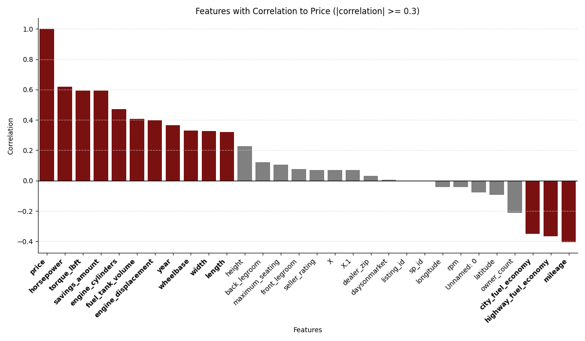
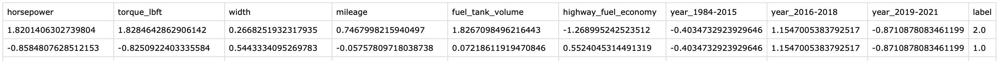

Performing data preprocessing for SVM modeling involves sampling from the original data, extracting highly relevant features for the classification of car prices, converting categorical data to numeric values, implementing appropriate standardization, and splitting the dataset into a training set and a test set for effective modeling.
The source data for this project is extensive, with 600,000 rows, and using all of the data for modeling would be expensive regarding memory usage and computation. Therefore, to reduce the size of the data needed for modeling and reduce the overall cost, sampling 1,000 rows is performed. The replace=False option in the sample function is used for random sampling that does not allow duplicate sampling, ensuring each row is uniquely selected to help preserve the variety of data. Randomly sampling a small percentage of data, say 1,000 cases, from a large dataset may not sufficiently represent the population. Therefore, when training a model and generalizing results, it is crucial to carefully evaluate how well the small dataset sampled generalizes to the entire population.
There are more than 60 features in the original data. However, applying all these features to SVM modeling can cause problems. As the number of features increases, the space size grows exponentially, making data sparse and model training difficult. Using all the features can also lead to overtraining on the training data and poor generalization of new data. In addition, more features can increase the model's training and prediction time, making it easier to interpret and identify which features are essential.
This step uses a correlation coefficient for feature selection to perform SVM modeling effectively. This allows the model to be better generalized by removing unimportant features. In addition, features with high correlation coefficients are more likely to be related to each other, providing redundant information to the model and improving the efficiency of computation and calculation. Below is a graph that allows comparison of the correlation coefficients of each feature and their use in extracting the best features for modeling.
The features extracted through this process are as follows.
Some features in the extracted dataset are defined as categorical. In this step, the categorical variables are converted to numeric values. One of the reasons SVMs are primarily applied to numeric data is that the model can work effectively when numbers represent the input data. SVMs map data into a high-dimensional space to find decision boundaries between classes, which is easier to do when numbers represent the characteristics of each data point. The dataset contains a categorical variable representing the number of years. However, with many categories, performing a one-hot encoding would significantly increase dimensionality. Therefore, this feature is split into three categories, and a one-hot encoding is applied to these categories.
SVM is a supervised learning algorithm that requires input data and corresponding labels (classes or outcomes) to learn patterns in the data. SVM models utilize this label information to learn patterns between data and find decision boundaries. To do this, the label is defined as the price of a vehicle. However, vehicle prices are continuous numeric, meaning they have a numeric or categorical (category) form in a classification problem, so they need to be converted to numeric categorical. As done earlier with other machine learning methods, the price of a car can be categorized as "low", "medium", and "high", and converted to numbers 0, 1, 2.
Data can be standardized to match scales. If each feature has a different scale, the SVM may give more importance to larger-scale features. Standardization avoids this problem by scaling each feature to the same scale. In addition, kernel SVMs use the inner product of the data. When features have similar scales, the inner computation is efficient. And since SVMs work based on distances between data, standardization makes distance measurements in multidimensional spaces more meaningful. To perform standardization, Python's StandardScaler converts each feature into a value from a standard normal distribution with a mean of zero and a standard deviation of one.
As a result of the above procedure, the following data was generated.
To train the model using the train set and evaluate the model's performance using the test set, the data is split into a train set and a test set. Python's train_test_split function is used for this, dividing the data in the ratio of 70% training data and 30% test data. This split aims to ensure that the model fits the training data and assesses its performance on actual data. Additionally, training the model on the entire dataset might result in the model having prior knowledge about future data when making predictions, leading to an overly optimistic performance assessment. Keeping the test set separate allows a more accurate evaluation of the model's generalization performance on future data.
The images below show simple information about the partitioned training dataset (left) and test dataset (right).
# Required libraries library(dplyr) library(rpart) library(rpart.plot) library(RColorBrewer) library(rattle) library(caret) library(png) library(grDevices) library(Metrics) library(reshape2) library(ggplot2) library(tidyr) library(knitr) library(kableExtra) # Load CSV df <- read.csv("used_cars_data_cleaned_final_ver.csv") str(df) # Set seed for reproducibility set.seed(2010) # Number of rows to sample num_rows_to_sample <- 100000 # Randomly sample 100 rows from the scaled_data dataframe df_sampled <- df[sample(nrow(df), num_rows_to_sample, replace = FALSE), ] # store CSV write.csv(df_sampled, "used_cars_data_cleaned_final_ver_dt_sampled.csv") df_sampled <- read.csv("used_cars_data_cleaned_final_ver_dt_sampled.csv") # Extract the desired columns from scaled_org_data # Exclude fields inappropriate for analysis # df_dt <- df_sampled[, c('transmission', 'fuel_type', 'wheel_system', 'body_type', "city_fuel_economy", "highway_fuel_economy", "engine_displacement", "fuel_tank_volume", "engine_cylinders", "horsepower", "torque_lbft", "mileage", "year", "width", "length", "owner_count", "has_accidents", "fleet", "body_type", "price")] df_dt <- subset(df_sampled, select = -c(sp_name, sp_id, latitude, listing_color, interior_color, longitude, is_luxury, trim_name, model_name, major_options, main_picture_url, listing_id, description, vin, dealer_zip, city, exterior_color,franchise_make, listed_date, make_name,state, X.3, X.2, X.1,X)) # Convert categorical variables to numeric types through One-Hot Encoding # Perform one-hot encoding for the 'transmission' column df_dt_encoded <- cbind(df_dt, model.matrix(~ transmission - 1, data = df_dt)) # Remove the original 'transmission' column after encoding df_dt_encoded <- df_dt_encoded[, !names(df_dt) %in% 'transmission'] # Perform one-hot encoding for the 'fuel_type' column df_dt_encoded <- cbind(df_dt_encoded, model.matrix(~ fuel_type - 1, data = df_dt_encoded)) # Remove the original 'fuel_type' column after encoding df_dt_encoded <- df_dt_encoded[, !names(df_dt_encoded) %in% 'fuel_type'] # Perform one-hot encoding for the 'wheel_system' column df_dt_encoded <- cbind(df_dt_encoded, model.matrix(~ wheel_system - 1, data = df_dt_encoded)) # Remove the original 'wheel_system' column after encoding df_dt_encoded <- df_dt_encoded[, !names(df_dt_encoded) %in% 'wheel_system'] # Perform one-hot encoding for the 'body_type' column df_dt_encoded <- cbind(df_dt_encoded, model.matrix(~ body_type - 1, data = df_dt_encoded)) # Remove the original 'body_type' column after encoding df_dt_encoded <- df_dt_encoded[, !names(df_dt_encoded) %in% 'body_type'] df_dt <- df_dt_encoded ########################################################################### # For regression # Dataset for a model that predicts vehicle prices through regression among decision trees # Label is set to vehicle price ########################################################################### # Dataframe for regression df_dt_regression <- df_dt_encoded # Change the column name 'price' to 'label' in df_dt_regression colnames(df_dt_regression)[colnames(df_dt_regression) == "price"] <- "label" # Identify the position of the 'label' column label_column_index <- which(names(df_dt_regression) == "label") # Move the 'label' column to the last position df_dt_regression <- df_dt_regression[, c(1:(label_column_index - 1), (label_column_index + 1):ncol(df_dt_regression), label_column_index)] # Split the dataset set.seed(123) #reproducability setting train_indices_regression <- sample(1:nrow(df_dt_regression), 0.7 * nrow(df_dt_regression))#createDataPartition(y = df_dt_regression$label, p = 0.7, list = FALSE) df_dt_train_regression <- df_dt_regression[train_indices_regression, ] df_dt_test_regression <- df_dt_regression[-train_indices_regression, ] cat("Training set length: ", nrow(df_dt_train_regression), "\n") cat("Test set length: ", nrow(df_dt_test_regression), "\n") ########################################################################### # For classification # Label is set to vehicle price ########################################################################### # Add a new column (category) to the dataframe to convert price into a categorical variable df_dt$label <- cut(df_dt$price, breaks = c(0, 13000, 30000, 10000000), labels = c("Low", "Moderate", "High")) df_dt$label <- as.factor(df_dt$label) # Delete price column df_dt <- df_dt[, -which(names(df_dt) == "price")] df_dt$label # Split the dataset set.seed(123) #reproducability setting train_indices <- sample(1:nrow(df_dt), 0.7 * nrow(df_dt)) df_dt_train <- df_dt[train_indices, ] df_dt_test <- df_dt[-train_indices, ] cat("Training set length: ", nrow(df_dt_train), "\n") cat("Test set length: ", nrow(df_dt_test), "\n") df_dt_html <- kable(head(df_dt), format = "html", table.attr = "style='width:100%;'") write.csv(df_dt, "used_cars_data_cleaned_final_ver_dt_sampled_preprocessed.csv") write.csv(df_dt_train, "used_cars_data_cleaned_final_ver_dt_sampled_preprocessed_train.csv") write.csv(df_dt_test, "used_cars_data_cleaned_final_ver_dt_sampled_preprocessed_test.csv") # Define result dataframe result_df <- data.frame(Method = character(), Minsplit = numeric(), Maxdepth = numeric(), Class = character(), Accuracy = numeric(), Precision = numeric(), Recall = numeric(), F1_Score = numeric(), stringsAsFactors = FALSE) calculate_metrics <- function(conf_matrix, method, minsplit, maxdepth) { accuracy <- sum(diag(conf_matrix)) / sum(conf_matrix) precision <- diag(conf_matrix) / colSums(conf_matrix) recall <- diag(conf_matrix) / rowSums(conf_matrix) f1_score <- 2 * precision * recall / (precision + recall) result <- data.frame(' Method' = method, Minsplit = minsplit, Maxdepth = maxdepth, Class = c("Low", "Moderate", "High"), Accuracy = accuracy, Precision = precision, Recall = recall, F1_Score = f1_score) rownames(result) <- NULL return(result) } ########################################################################################### # Gini ########################################################################################### # Train rpart_gini <- rpart(df_dt_train$label ~., data = df_dt_train, method='class') # Create a high-quality PNG file png("fancyRpartPlot_gini.png", width = 3600, height = 2800, units = "px", pointsize = 12, res = 600) fancyRpartPlot(rpart_gini, main = "Decision trees based on the Gini index") # Save the plot dev.off() # Extract variable importance var_imp <- varImp(rpart_gini) %>% rownames_to_column() %>% arrange(desc(Overall)) %>% slice(1:20) png("Variable_Importance_gini.png", width = 3600, height = 2800, units = "px", pointsize = 12, res = 600) ggplot(var_imp, aes(x = reorder(rowname, -Overall), y = Overall)) + geom_bar(stat = "identity", fill = "steelblue") + labs(title = "Top 20 Variable Importance", x = "Variable", y = "Importance") + theme(axis.text.x = element_text(angle = 45, hjust = 1)) # Save the plot dev.off() # Find the cp value for pruning # printcp(rpart_gini) # # cp_value <- rpart_gini$cptable[which.min(rpart_gini$cptable[,"xerror"]),"CP"] # # pruned_rpart_entropy <- prune(rpart_entropy, cp = 0.02) # # fancyRpartPlot(pruned_rpart_entropy) # Prediction rpart_gini_pd <- predict(rpart_gini, df_dt_test, type = "class") # Calculate confusion matrix confusion_matrix_gini <- confusionMatrix(rpart_gini_pd, df_dt_test$label) conf_mat_table <- as.data.frame(confusion_matrix_gini$table) # Visualization png("confusionMatrix_gini.png", width = 3600, height = 2800, units = "px", pointsize = 12, res = 600) ggplot(data = conf_mat_table, aes(x = Reference, y = Prediction, fill = Freq, label = Freq)) + geom_tile() + geom_text(color = "white", size = 8, fontface = "bold") + scale_fill_gradient(low = "lightblue", high = "darkblue") + labs(title = "Confusion Matrix Heatmap based on the Gini index", x = "Reference", y = "Prediction", fill = "Frequency") # Save the plot dev.off() # Calculate accuracy, precision, recall, specificity, and F1 score for Gini method result_df <- rbind(result_df, calculate_metrics(confusion_matrix, 'gini', -1, -1)) kable(result_df, format = "html", table.attr = ' class="table table-sm" style="font-size: 12px;"') ###### # Pruning ###### # Train rpart_gini_pruning <- rpart(df_dt_train$label ~., data = df_dt_train, method='class', cp = 0.001) # Create a high-quality PNG file png("fancyRpartPlot_gini_pruning.png", width = 4000, height = 2800, units = "px", pointsize = 12, res = 600) fancyRpartPlot(rpart_gini_pruning, main = "Decision trees based on the Gini index after pruning") # Save the plot dev.off() # Extract variable importance var_imp_pruning <- varImp(rpart_gini_pruning) %>% rownames_to_column() %>% arrange(desc(Overall)) %>% slice(1:20) png("Variable_Importance_gini_pruning.png", width = 3600, height = 2800, units = "px", pointsize = 12, res = 600) ggplot(var_imp_pruning, aes(x = reorder(rowname, -Overall), y = Overall)) + geom_bar(stat = "identity", fill = "steelblue") + labs(title = "Top 20 Variable Importance", x = "Variable", y = "Importance") + theme(axis.text.x = element_text(angle = 45, hjust = 1)) # Save the plot dev.off() # Prediction rpart_gini_pd_pruning <- predict(rpart_gini_pruning, df_dt_test, type = "class") confusion_matrix_gini_pruning <- confusionMatrix(rpart_gini_pd_pruning, df_dt_test$label) ########################################################################################### # Information Gain(Entropy) ########################################################################################### # Train rpart_entropy <- rpart(df_dt_train$label ~., data = df_dt_train, method='class', parms = list(split="information")) # rpart.plot(rpart_entropy) png("fancyRpartPlot_entropy.png", width = 3600, height = 2800, units = "px", pointsize = 12, res = 600) fancyRpartPlot(rpart_entropy, main = "Decision trees based on Information gain") # Save the plot dev.off() # prp(rpart_entropy) # Extract variable importance var_imp_ent <- varImp(rpart_entropy) %>% rownames_to_column() %>% arrange(desc(Overall)) %>% slice(1:20) png("Variable_Importance_entropy.png", width = 3600, height = 2800, units = "px", pointsize = 12, res = 600) ggplot(var_imp_ent, aes(x = reorder(rowname, -Overall), y = Overall)) + geom_bar(stat = "identity", fill = "steelblue") + labs(title = "Top 20 Variable Importance", x = "Variable", y = "Importance") + theme(axis.text.x = element_text(angle = 45, hjust = 1)) # Save the plot dev.off() # Prediction rpart_entropy_pd <- predict(rpart_entropy, df_dt_test, type = "class", parms = list(split="information")) # Calculate confusion matrix confusion_matrix_entropy <- confusionMatrix(rpart_entropy_pd, df_dt_test$label) conf_mat_table_ent <- as.data.frame(confusion_matrix_entropy$table) # Visualization png("confusionMatrix_entropy.png", width = 3600, height = 2800, units = "px", pointsize = 12, res = 600) ggplot(data = conf_mat_table_ent, aes(x = Reference, y = Prediction, fill = Freq, label = Freq)) + geom_tile() + geom_text(color = "white", size = 8, fontface = "bold") + scale_fill_gradient(low = "lightblue", high = "darkblue") + labs(title = "Confusion Matrix Heatmap based on the Gini index", x = "Reference", y = "Prediction", fill = "Frequency") # Save the plot dev.off() # Calculate accuracy, precision, recall, specificity, and F1 score for Gini method result_df <- rbind(result_df, calculate_metrics(confusion_matrix_entropy$table, 'information', -1, -1)) kable(result_df, format = "html", table.attr = ' class="table table-sm" style="font-size: 12px;"') ########################################################################################### # minsplit = 10, 20, 30Permalink ########################################################################################### for (s in c('gini', 'information')){ for (i in c(1, 5, 10, 20, 40)){ rpart_minsplit <- rpart(df_dt_train$label ~., data = df_dt_train, method='class',control = rpart.control(minsplit = i), parms = list(split=s) ) #fancyRpartPlot(rpart_minsplit) rpart_minsplit_pd <- predict(rpart_minsplit, df_dt_test, type = "class", parms = list(split=s)) # Calculate confusion matrix confusion_matrix_minsplit <- confusionMatrix(rpart_minsplit_pd, df_dt_test$label) # Calculate accuracy, precision, recall, specificity, and F1 score for Gini method result_df <- rbind(result_df, calculate_metrics(confusion_matrix_minsplit$table, s, i, -1)) } } ########################################################################################### # minsplit = 4, 5, 6 maxdepth ########################################################################################### for (s in c('gini', 'information')){ for (i in c(2, 3, 4, 5, 6, 7)){ rpart_maxdepth <- rpart(df_dt_train$label ~., data = df_dt_train, method='class',control = rpart.control(maxdepth = i), parms = list(split=s)) png(paste0("fancyRpartPlot_",s,"_maxdepth_",i,".png"), width = 3600, height = 2800, units = "px", pointsize = 12, res = 600) fancyRpartPlot(rpart_maxdepth) # Save the plot dev.off() rpart_maxdepth_pd <- predict(rpart_maxdepth, df_dt_test, type = "class", parms = list(split=s)) confusion_matrix_maxdepth <- confusionMatrix(rpart_maxdepth_pd, df_dt_test$label) # Calculate accuracy, precision, recall, specificity, and F1 score for Gini method result_df <- rbind(result_df, calculate_metrics(confusion_matrix_maxdepth$table, s, -1, i)) } } result_df kable(result_df, format = "html", table.attr = ' class="table table-sm" style="font-size: 12px;"') # Train the model rpart_regression <- rpart(label ~ ., data = df_dt_train_regression) # Create a high-quality PNG file png("fancyRpartPlot_regression.png", width = 3600, height = 2800, units = "px", pointsize = 12, res = 600) fancyRpartPlot(rpart_regression) # Save the plot dev.off() # Visualize the decision tree rpart.plot(rpart_regression, main = "Decision Tree for Regression") # Predict using the test set predictions <- predict(rpart_regression, df_dt_test_regression) mse <- mse(df_dt_test_regression$label, predictions) mae <- mae(df_dt_test_regression$label, predictions) rsquared <- R2(predictions, df_dt_test_regression$label) # Create a table to display the evaluation metrics evaluation_table <- data.frame( Metric = c("Mean Squared Error", "Mean Absolute Error", "R-Squared"), Value = c(mse, mae, rsquared) ) evaluation_table <- data.frame("MSE" = mse, "MAE" = mae, "R-Squared" = rsquared) # Print the evaluation table print(evaluation_table) # Train a decision tree model on training and test sets rpart_model_before <- rpart(label ~ ., data = df_dt_train, method = 'class') rpart_model_after <- rpart(label ~ ., data = df_dt_train, method = 'class', cp = 0.001) # Tree visualization before pruning for training set rpart.plot(rpart_model_before, main = "Decision Tree Before Pruning") # Tree visualization after pruning on the training set rpart.plot(rpart_model_after, main = "Decision Tree After Pruning") train_predictions_before <- predict(rpart_model_before, newdata = df_dt_train, type = "class") train_predictions_after <- predict(rpart_model_after, newdata = df_dt_train, type = "class") # Accuracy output of training set and test set train_accuracy_before <- mean(train_predictions_before == df_dt_train$label) train_accuracy_after <- mean(train_predictions_after == df_dt_train$label) # Predictions on the test set predictions_before <- predict(rpart_model_before, newdata = df_dt_test, type = "class") predictions_after <- predict(rpart_model_after, newdata = df_dt_test, type = "class") # Accuracy comparison before and after pruning accuracy_before <- mean(predictions_before == df_dt_test$label) accuracy_after <- mean(predictions_after == df_dt_test$label) # Result output print(paste("Accuracy before pruning:", accuracy_before)) print(paste("Accuracy after pruning:", accuracy_after)) # Check for overfitting if (train_accuracy_before - accuracy_before > 0.05) { print("Overfitting detected before pruning.") } else { print("No overfitting detected before pruning.") } if (train_accuracy_after - accuracy_after > 0.05) { print("Overfitting detected after pruning.") } else { print("No overfitting detected after pruning.") } # Predictions on the training set train_predictions_before <- predict(rpart_model_before, newdata = df_dt_train, type = "class") train_predictions_after <- predict(rpart_model_after, newdata = df_dt_train, type = "class") # Accuracy output of training set and test set train_accuracy_before <- mean(train_predictions_before == df_dt_train$label) train_accuracy_after <- mean(train_predictions_after == df_dt_train$label) print(paste("Train Accuracy before pruning:", train_accuracy_before)) print(paste("Train Accuracy after pruning:", train_accuracy_after)) # Check for overfitting if (train_accuracy_before - accuracy_before > 0.05) { print("Overfitting detected before pruning.") } else { print("No overfitting detected before pruning.") } if (train_accuracy_after - accuracy_after > 0.05) { print("Overfitting detected after pruning.") } else { print("No overfitting detected after pruning.") } ################################################################################ # Decision tree models with various features ################################################################################ str(df_dt_test) # Define formulars fml <- list( label ~ horsepower + torque_lbft, label ~ horsepower + torque_lbft + height, label ~ horsepower + torque_lbft + height + year, label ~ horsepower + torque_lbft + height + year + fuel_tank_volume, label ~ horsepower + torque_lbft + height + year + fuel_tank_volume + mileage, label ~ horsepower + torque_lbft + height + year + fuel_tank_volume + mileage + length, label ~ horsepower + torque_lbft + height + year + fuel_tank_volume + mileage + length + owner_count, label ~ horsepower + torque_lbft + height + year + fuel_tank_volume + mileage + length + owner_count + width, # label ~ horsepower + torque_lbft + height + year + fuel_tank_volume + mileage + length + owner_count + width + highway_fuel_economy, # label ~ horsepower + torque_lbft + height + year + fuel_tank_volume + mileage + length + owner_count + width + highway_fuel_economy +engine_displacement, # label ~ horsepower + torque_lbft + height + year + fuel_tank_volume + mileage + length + owner_count + width + highway_fuel_economy +engine_displacement + front_legroom, # label ~ horsepower + torque_lbft + height + year + fuel_tank_volume + mileage + length + owner_count + width + highway_fuel_economy +engine_displacement + front_legroom + engine_cylinders, label ~ . ) # Define functions calculate_metrics <- function(conf_matrix, features) { accuracy <- sum(diag(conf_matrix)) / sum(conf_matrix) precision <- diag(conf_matrix) / colSums(conf_matrix) recall <- diag(conf_matrix) / rowSums(conf_matrix) f1_score <- 2 * precision * recall / (precision + recall) result <- data.frame(Features = features[3], Class = c("Low", "Moderate", "High"), Accuracy = accuracy, Precision = precision, Recall = recall, F1_Score = f1_score) rownames(result) <- NULL return(result) } analyze_dt <- function(features, result_df) { # Build a Decision Tree model model <- rpart(features, data = df_dt_train, method='class') # Make predictions on the test set predictions <- predict(model, newdata = df_dt_test, type = "class") # Calculate the confusion matrix conf_matrix <- confusionMatrix(predictions, df_dt_test$label) # Calculate accuracy, precision, recall, specificity, and F1 score for Gini method result_df <- rbind(result_df, calculate_metrics(conf_matrix$table, as.character(features))) return (list(result_df, conf_matrix, model, predictions)) } # Define result dataframe result_features_df <- data.frame(formula = character(), Class = character(), Accuracy = numeric(), Precision = numeric(), Recall = numeric(), F1_Score = numeric(), stringsAsFactors = FALSE) for (i in 1:length(fml)) { print(fml[[i]]) result_features_df <- analyze_dt(fml[[i]], result_features_df)[[1]] } result_features_df kable(result_features_df, format = "html", table.attr = ' class="table table-sm" style="font-size: 12px;"') model_6 <- analyze_dt(fml[[6]], result_features_df) model_6[[3]] # Create a high-quality PNG file png("fancyRpartPlot_features_gini.png", width = 3600, height = 2800, units = "px", pointsize = 12, res = 600) fancyRpartPlot(model_6[[3]], main = "Decision trees based on the Gini index") # Save the plot dev.off() | cs |